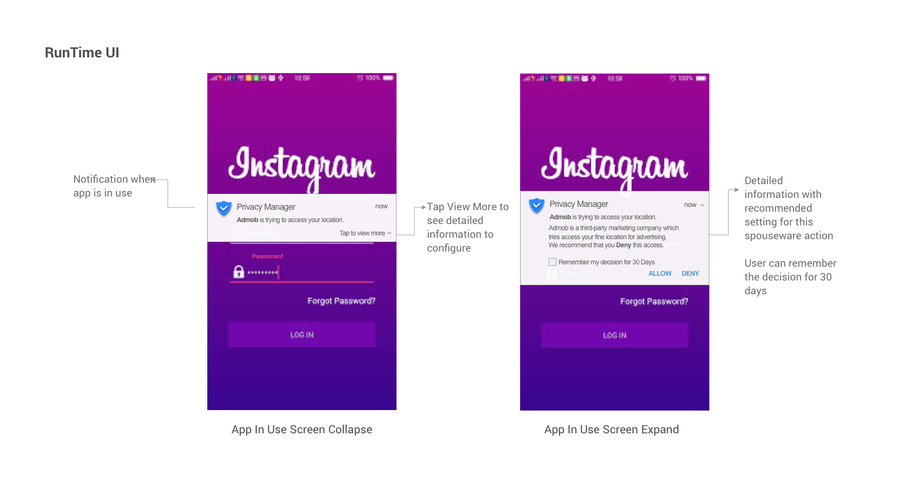
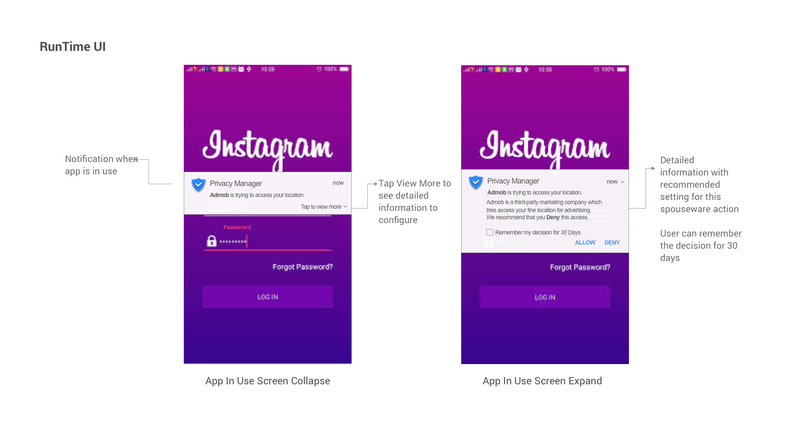
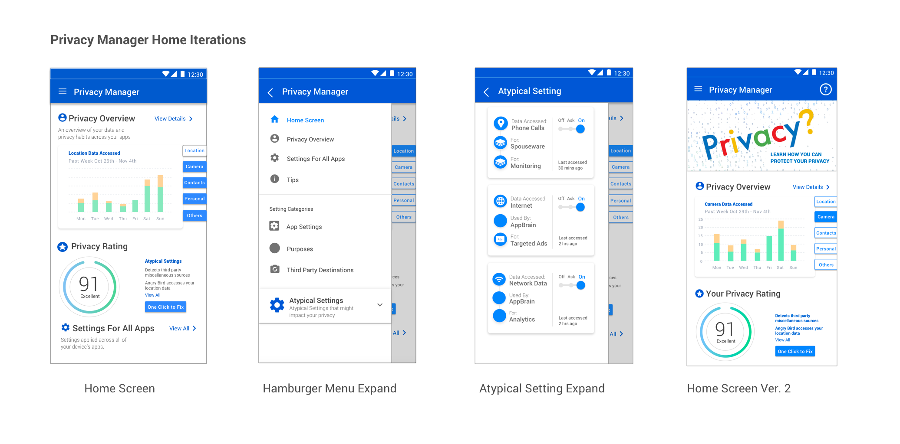

How can we optimize the shopping experience and make it efficient and effective?
There are moments when you walk in a store and you are overwhelmed by the amount of products and information. You enter with no idea whether they have clothes you want, and you don't know where or how to start. Sometimes you spend hours in a store, trying on a lot of pieces and you can't find one that fits you perfectly.
Vuno is your solution to problems like these. Vuno recreates your shopping experience using Augmented Reality with assistance from AI.
Redesign Individual Project - 4 Weeks
My Role: Interaction Design, User Testing, Prototyping, Logic Flow
Keywords: Augmented Reality, Voice Commands, AI
Tools: Unity, Vuforia, After Effects, Principle, Sketch
Vuno is an artificial intelligence powered assistance that utilizes Augmented Reality to assist individuals in their shopping experience to make both store navigation and garment selection processes effortlessly and effectively. Vuno implements conversational UI to help users set their shopping goals. Vuno extracts users' physical information such as body measurements in BWH, height, weight, shopping budget and find target stores and clothes that satisfy users' pre-set shopping goals. Vuno utilizes AR to forge an engaging shopping experience for shoppers to filter and absorb information with ease and efficiency.
Here are our key prototypes in motion:

Through Vuno, user can use Voice Commands to trigger the AR interface and activate their AR shopping experience. Vuno receives commands and extracts users' registered information using Artificial Intelligence to search for surrounding areas and find the stores that suit users' needs.
Based on users' body measurements, shopping habits, and spending budget, Vuno lists out some of the most relevant information for users such as price range, available discounts, clothes sizes, new collection arrive date, and store's opening hours. Vuno provides color based recommendation systems.


Vuno provides a shopping category list interface after user enters the store. User can use voice commands to set his or her target goal, for example the category he or she wants to shop in. After Vuno receives the command, it will process the data and start loading information for the user.
Vuno matches users needs with current inventory in store based on users’ shopping goals. Vuno identifies inventories that match with users' body measurements through guidance from animated butterflies. Vuno accelerates users' information processing progress by further provides information such as size, price, and new collection to the end-users at a glance.

For the users who don't have time and enjoy the ease of shopping at home or the disabled individuals who might encounter difficulties coming in store, Vuno provides the convenience by bringing AR shopping experience whenever and wherever. User can choose to flip through stores fashion magazines and see recommended clothes for them in Augmented Reality models. By simply opening up Vuno, user will see live clothing models with their reactive personal avatar.
"How can we enhance the current shopping experience?" In order to answer the question, I decided to conduct Contextual Inquiry research method followed by Semi-Structured Interview to take close observations on users' behavior during their shopping process.
After receiving consent from the stores and customers, I started observing users' behaviors and recording when new events are triggered. I made note on the time they spent on each task, such as "picking clothes on the same hanger", "walking around", "getting help from salespeople", and "trying on in fitting room".

If apps had clearer purposes (inferred or declared by devices), then we could create better predictive models of privacy concerns, which can scale to millions of apps and users. What we propose to Android is to ask the app developers to break down privacy requests, help users to recognize typical versus atypical data requests, and give them recommended privacy suggestions.
Since we are redesigning the whole interaction of users with their privacy-sensitive data and the Privacy Manager, we have broken down the project into five parts: the Privacy Manager Home Pages, Install Interface, Configuration Interface, Run Time Interface, and Quick Setting Interface.

 `
` Our Project shows user what the permissions are used for and who are the data being sent to.
We want to make all the privacy data permissions transparent, help users configure the best privacy setting base on their preference, and at the same time, make the interaction as simple as possible under data complexity. The detailed goals for each of the five sections are listed above.
My design process for Privacy Manager breaks down into seven steps: Heuristic Evaluation, User Research, User Interview/Card Sorting, Sketching & Wireframing, Medium Fidelity Design, and Usability Testing. After several rounds of iterations, I finalize on the design and make it high fidelity.

I start from understanding the problem to Heuristic Evaluation on the current design. Then I dive into User Research where I could understand what users need and their pain points. After User Research, I conduct User Interview with potential users in different demographic groups to further get into users heads, so the products could better serve users’ needs.
After user research, we divide our target users into three groups: the young millennials, the working professionals, the olders, and some privacy highly-sensitive groups such as the military.

We found interesting contradictions that worth notice among users after the interview. While most of the users indicate that they rarely configure their privacy settings, they are also sensitive about their data. In fact, more than half of them don’t know that their information is used or sold to third-party advertisers. Most importantly, they feel they don’t have control over their privacy.

Not to our surprise, most users care about their privacy and how their data is being used. Nevertheless, most of the users indicated that the current Privacy system forces them to agree to privacy requests that they didn't want before they download any apps. The users are worried the apps would not function properly if they deny the data access. Most of them said that they didn't know what their information is sent or sold to third party companies.

Information Architecture
In order to help us better understand the flow between each parts of the Privacy Settings, I have drawn out the flow diagram that shows the information architecture of the Privacy Manager, circumstances that will activate each section parts, and the connection among each sections. The detailed information architecture is shown below:

Medium Fidelity Design
The medium fidelity prototype includes Install Interface, Notification, and Quick Settings. For each sections, there are some iterations behind the current versions. For example. there are three rounds of Install Interface that have been presented below. The first iteration considered only to display all the information, but the second and third iterations brought up the new concept: "Typical " vs "Atypical" requests. The third version considered circumstances when privacy permission scales up and exceeds the current container box.


My initial prototype focused on detailing privacy settings for different purposes and defining what data is being accessed , why the data has been requested, and who is trying to access the data.
Instead of directing users to another page, I designed pop-up box on the same page, so users will have a less obtrusive transition. I broke down the problems into categories by listing out the Atypical Settings on the top, and collapsed Typical Settings for this app categorization.

 

First version categorizes permissions by “typical” and “atypical” settings. We wanted to add an “ask” option for users so the users can set permission settings only when the data is accessed at the moment. Users can click on the downward arrows to view more details regarding the specific permission.
In order to help users make safer choices with their settings, we set the typical settings for the app category to be "on" and atypical settings to be "ask". Users can easily expand each setting category to see more details such as who is accessing the data, what data type is accessed, and why the data is requested.
In the next iteration, I will design how Global Policy (settings for all apps)affects users on install interface. There might be conflicting cases when a user sets location for Global Policy to be on, but the location policy for the specific app is "atypical". We need to inform users this specific case so they don't have conflicting mental models. In our previous version, I think the design is still a lot of text to read. I will do another round of user testing and work on simplying install UI. Furthermore, I will test on adding a recommended permission choice into the UI and iterate from the feedback.
Since we are designing the Privacy Manager for ALL mobile users, we want to make the interaction as simple as possible while delivering all the information users want to know . We need to make our design simple to use and easy to adapt for all age groups.
We experimented the Card Sorting research method after the first round of design. The purpose for Card Sorting is to understand what information users care about the most when they configure a privacy setting.

After five rounds of Card Sorting, we realized that most users care about the “purpose” and “data type” of a privacy request the most. Users also tend to look at all the information together to see if their data is used properly.
After users interact with Privacy Manager in the Install UI, We also want to allow users to come to Privacy Manager Home Screen to gain more knowledge about their privacy standing. They will have access for more detailed configurations at Privacy Manager Home Page.

We examined the previous design for Privacy Poliy Home Page, and found the following problems that we could fix through Heuristic Evaluation:
We then did user testing on the prototype. After user testing, I received the following results:
 Privacy Rating
After user testing, I removed all the explanations for each section on the home screen to make the interface look clean. The titles should be explanatory enough for users to understand. Users can click in "view details" to get more information on each section. The "Atypical Permissions" will be highlighted at the Privacy Rating section. I also designed another version of interface when a user has malsoftware such as spouseware installed on the computer. User will visually notice on the home screen by both color and privacy score change.
Our card sorting research shows that most of the users put data type/purposes as their primary concern, and they care least about user of the data. Based on this result, we designed a zoom-in effect for permissions, with which users would see the data type and purposes first, and can zoom in to see details and configure. Users would also be able to turn on/off/ask a group of permissions with one tap. The zoom-in design is applied to install UI, global settings and app settings in configure UI.
Expanded Cards (Previous vs. Updated)We eventually decided to use expanded cards than the regular cards. From the previous user testing result, we found out that our design was too overwhelming for users to see at the first place. The expanded cards will give users an overview of the privacy request. At the same time, it also allows users to expand and configure personally.
Expanded Cards (Previous vs. Updated)
We would love to show our users a more direct way in grasping Privacy Overview. The new design not only gives users a brief view of their current understanding, but also the proportion of Typical vs. Atypical accesses. Users can browse through different data types and see the trends by clicking on the taps on the right.
Privacy Rating (New Idea)
The Privacy Rating is the new idea that I came up with to encourage users configure their privacy setting. Users are more motivated to change or find out what's wrong with their privacy when they see the score is not perfect.
We would love to show our users a more direct way in grasping Privacy Overview. The new design not only gives users a brief view of their current understanding, but also the proportion of Typical vs. Atypical accesses. Users can browse through different data types and see the trends by clicking on the taps on the right.
Allow Detailed Configuration on just One Click
Detailed configuration page allows users to turn "On" "Ask" or "Off" on All Permissions in a simple way. It makes privacy configuration easier for all end users.
Our project has not ended :) We are in the processing talking to many sponsors and partners. For future iterations, I will conduct more user testings on current design and iterate from feedback. In the meanwhile, I will work on building new on-boarding screens to walk users through Privacy Manager home screen and introduce functionalities for each section. I will also design detailed pages inside each section under "View More". I believe design is a constant process, and there is always more to improve.
If you are interested in learning about our progress, I am always happy to chat more about my updates!